6 MESES DE NOSOTROS
Nuestra Historia
Una historia de amor y momentos inolvidables.
Y cada segundo desde entonces
se convirtió en parte de nuestra historia. ❤️
NUESTRA HISTORIA COMENZÓ EN
otoño
Una estación de hojas cayendo,
días volviéndose más fríos
y una historia que recién comenzaba a nacer. 🍂
AQUELLA NOCHE, LA LUNA ESTABA
Cuarto Menguante
Aquella noche, la luna estaba menguando, pero nuestro amor recién comenzaba. ❤️
12 DE ABRIL DE 2026
NUESTRO SIGNO ES
Aries
Nuestra historia nació bajo el signo de Aries, trayendo coraje, intensidad y las ganas de vivirlo todo juntos. ❤️
12 DE ABRIL DE 2026
Nuestra primera cita
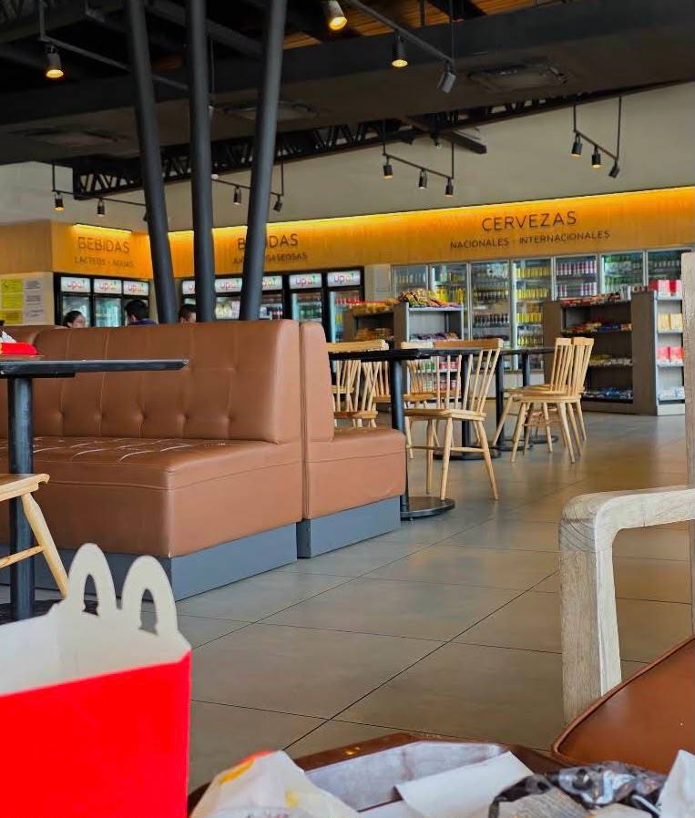
22 DE FEBRERO DE 2026
El día en que finalmente salimos juntos. Y lo que yo no sabía aquel día era que aquella cita sería el comienzo de todo. ❤️
El día de la serpiente
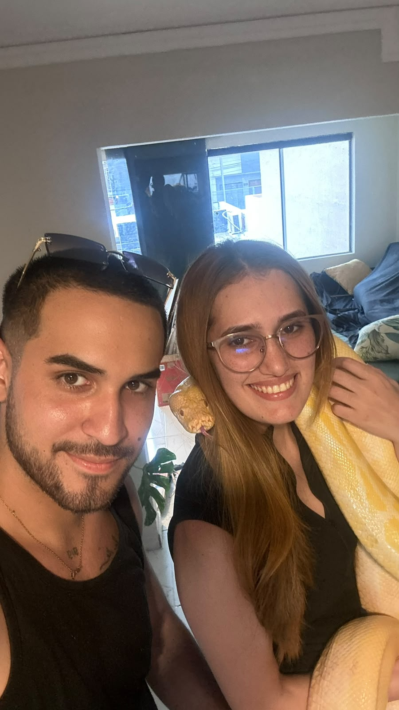
Vos dijiste que querías llevarme a un lugar... Yo solo no imaginaba que ese lugar estaría lleno de serpientes. 😂 Al principio me moría de miedo. Pero lograste hacerme sostener una. 🐍❤️
El día en que me pediste ser tu novia
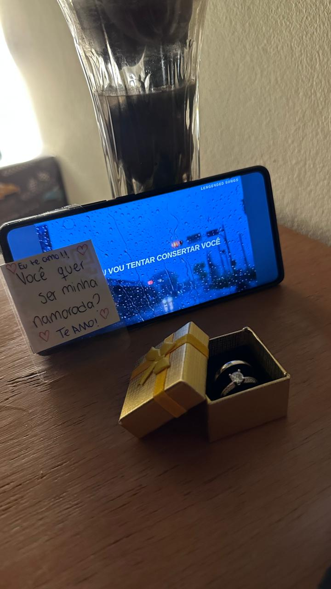
12 DE ABRIL DE 2026
El día en que nuestro "nosotros" se volvió oficial. ❤️
El día del Olimpia
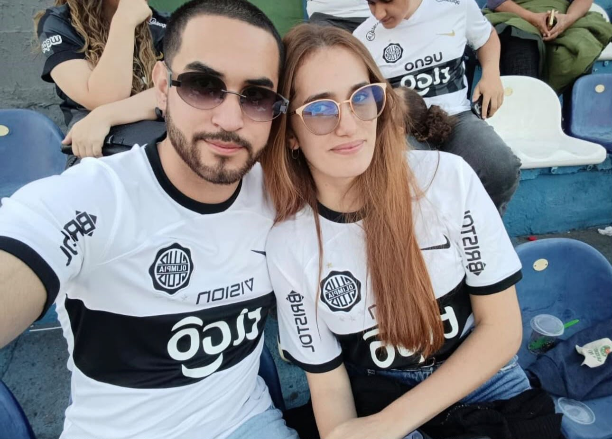
Su familia es olimpista. Su mamá, especialmente. 😂 Y después de tantos partidos, tanta pasión y tanta influencia... creo que no tuve elección. 🖤🤍 Ahora yo también soy olimpista.
El día del Botánico
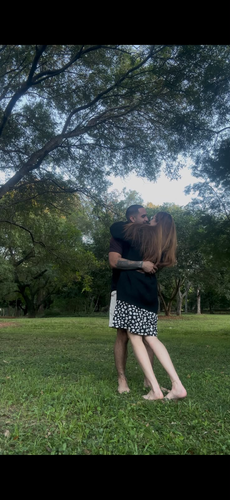
Un día entre plantas, animalitos y descubrimientos. De esos días que quedan guardados para siempre. 🌿
Nuestros dos bebés
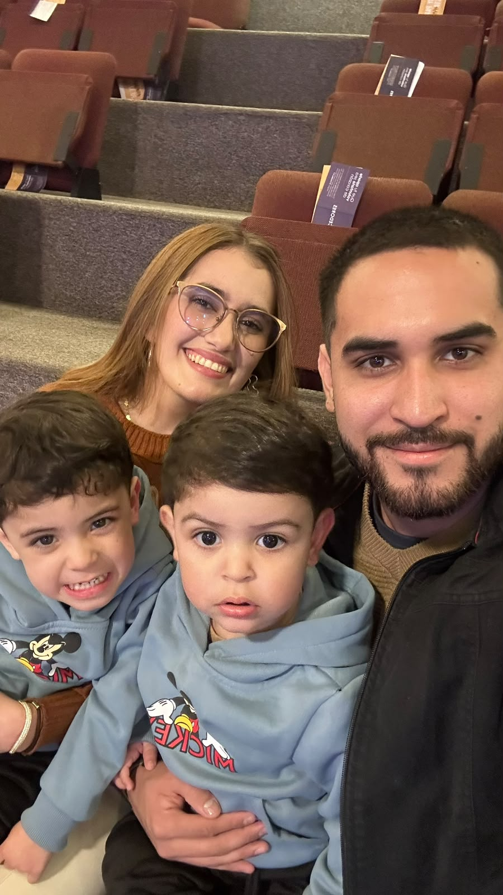
En algún momento, dejaron de ser solo tuyos. Se convirtieron también en nuestros bebés. ❤️
Nuestra primera Copa juntos
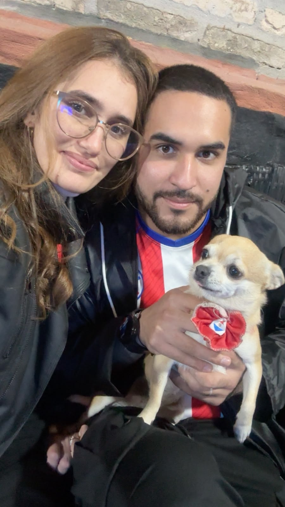
Fútbol, nosotros dos... y nuestra pequeña Canelita formando parte de ese recuerdo. 🐶❤️
Un fin de semana lejos de todo
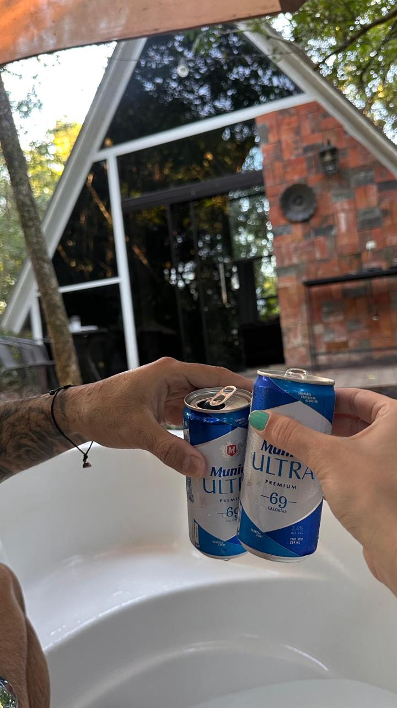
Un lugar lejos del mundo. Sin internet, sin apuro, sin nada que hacer... solo nosotros dos. ❤️
Parque Ñu Guazú
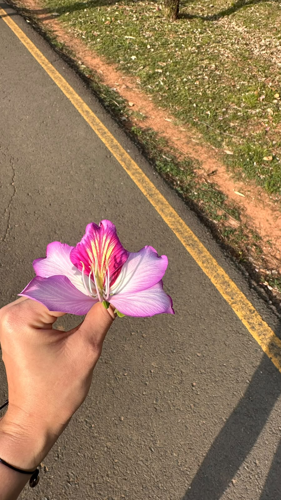
Otro lugar descubierto a tu lado. Otro recuerdo nuestro. 🌿
Una noche de sushi
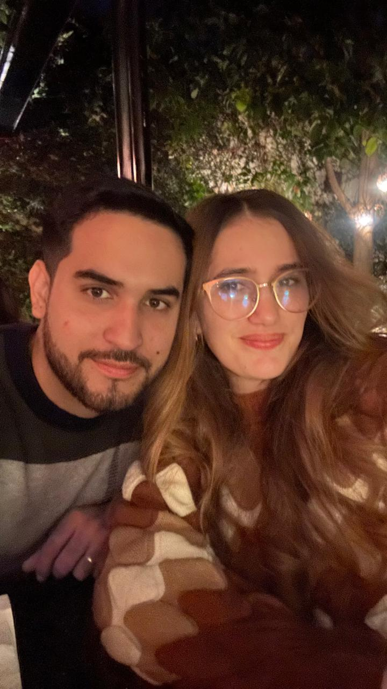
A veces solo hace falta una mesa, comida rica... y la mejor compañía del mundo. 🍣❤️
Nuestro primero concierto
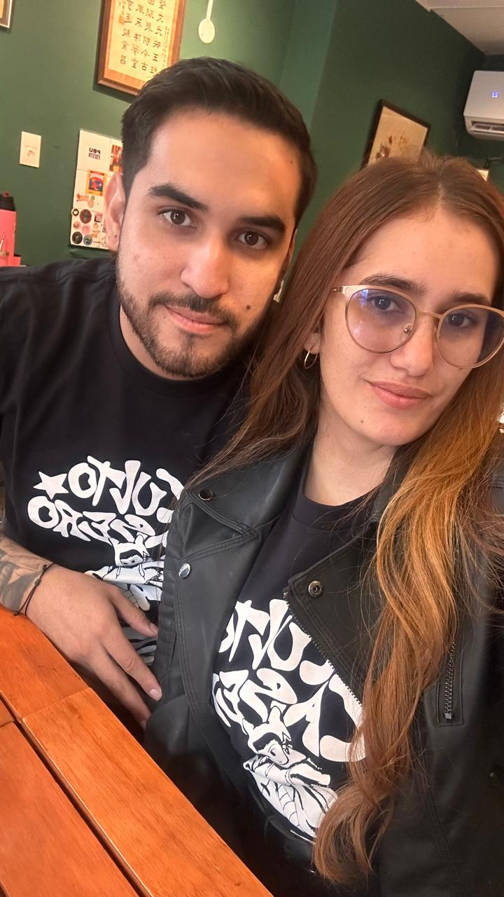
Nuestra primera vez cantando juntos al ritmo de una de nuestras bandas. 🎶
Nuestra primera boda juntos
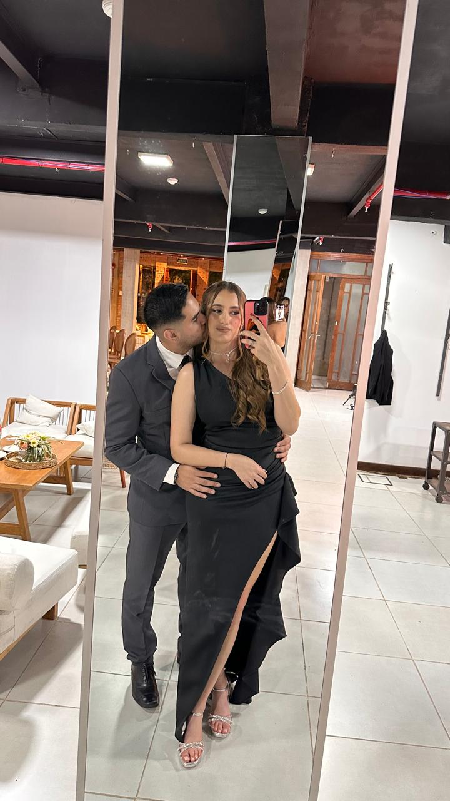
Una primera vez más para guardar en el corazón. ❤️
Y ESTO ES SOLO EL COMIENZO
Nuestra historia continúa...
Si estos fueron apenas nuestros primeros seis meses...
imaginate cuántos capítulos todavía nos quedan por escribir.
Tayná & Sérgio
12.04.2026 — ∞
Te amo. ❤️